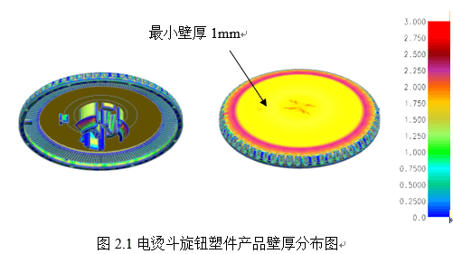
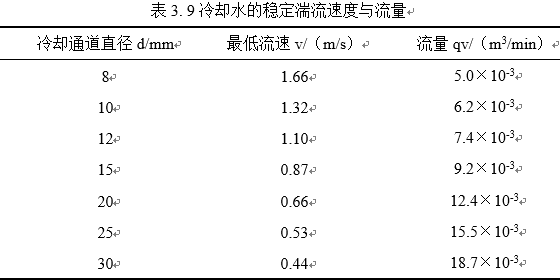

电烫斗旋钮模具设计
摘 要
随着社会物质生产的需求的不断提升，人们要求制造行业提出一种适用于批量生产的工艺方案。本课题利用所提供注射成型技术来提供一种满足生产批量需要的解决方案。
本课题以电烫斗旋钮零部件为产品设计对应的注射模具。课题首先将对产品塑件外形分析、注射成型的PC材料性能进行分析和校核并选定注射机型号。再者运用UG8.5三维设计软件中的HB_MOULD 6.7外挂来辅助电烫斗旋钮注射模具设计，设计包括模具浇注系统、顶出系统和冷却系统等的设计并对其相关参数进行许用校核。其中的顶出系统采用了强制脱模的方式，利用力学简化模型计算塑件强制脱模时的弯曲量和正应力。然后结合注射成型的特点和粘性流体运动的基本定律出发,利用Moldex 3D模流分析软件建立简化条件下注射模具的填充、保压、冷却、翘曲分析的数学模型，并将结果反馈到注射模具的设计上确保模具设计的合理性。
关键词：注射模具；UG；强制脱模；Moldex 3D；
ABSTRACT
With the increasing demand for social material production, the manufacturing industry is required to propose a process plan suitable for mass production. This topic utilizes the injection molding technology provided to provide a solution that meets the needs of production batches.
This topic uses the electric iron knob parts as the product to design the corresponding injection mold. The project will first analyze and check the performance of the plastic pa
rts of the product and the shape of the PC material for injection molding and select the model of the injection machine. In addition, the HB_MOULD 6.7 plug-in in UG8.5 3D design software is used to assist the design of the injection mold of the electric iron knob. The design includes the design of the mold casting system, the ejection system and the cooling system, and the relevant parameters are checked and approved. The ejector system adopts the method of forced demoulding, and uses the simplified model of mechanics to calculate the amount of bending and normal stress during the forced demolding of the plastic parts. Then combined with the characteristics of injection molding and the basic law of viscous fluid motion, the Moldex 3D mold flow analysis software is used to establish the mathematical model of filling, packing, cooling and warping analysis of injection mold under simplified conditions, and the results are fed back to the injection mold. The design ensures the rationality of the mold design.
Key words: Injection mold; UG;Forced demoulding; Moldex 3D;
第一章 绪论
模具是制造业的重要基础工艺装备，常被人们誉为现代工业生产之母。工业及民用产品等大批量生产和新产品开发都离不开模具。相对于其他制造方式生产的产品，注射模具生产的产品能在保证质量的同时还可以降低成本。特别是在提倡工业转型和追求智能生活的现在，生活工业用品批量需求大与流行快消费模式背景下，我国在模具市场上仍旧存在巨大的需求，并且在机械、电子、交通、国防、建筑、农业等各个行业广泛应用。现代已是高速工业化的世界，是没有办法离开模具的[5]。
1.1选题背景及其意义
人们对塑料产品的要求促使模具行业规范化发展，现在的模具行业已经发展为国家工业中重要组成部分。模具行业的发展提高了塑料产品和人们生活的质量[5]。现代模具制造业特点是高生产率、高质量、低材料损耗、低成本，也因此使其日益变成新世纪工业生产的重要途径和工艺发展趋势的向导[6]。我国目前在塑料模具行业交易市场发展非常快，每年呈现出15%-20%的趋势的增长速度。在2015年提出的工业4.0又将中国的塑料模具行业发展推向一个新高度。保守估计，以13%的增速计算，到2019年，我国塑料模具行业销售收入将达到1511亿元左右。到2023年，我国塑料模具行业的销售收入将接近2281亿元[11]。模具作为一种高附加值和技术密集型产品,其技术水平的高低已经是一个国家制业水平的重要标志之一。
模具被广泛应用于各个方面，尤其是像轻便的塑料家电产品这方面，家电产品涉及到的也包括本课题设计对象——电烫斗旋钮。现今的人们对智能家电产品需求不断提高，其家电产品的要求不但种类多而且形状多样。为了最大限度的迎合了使用者的需求，注射模具的设计、生产、制造必须按照用户的实际要求来进行[4]。而各种家电产品设备中至少百分之六十的零部件都是由模具制造的，生产部件样式之多、批量之大、要求之高，促使了我们模具开发人员必须设计一套更加高效合理的模具工艺装备，市场形势与技术导向也证明现代模具开发企业对模具设计人员的需求已越来越急切，特别会基于CAE分析进行模具设计的高技术人员。
制造业的很大一部分需要注射相关技术的发展来支持。对从事制造业的技术人员来说，他们应当具备为一个注射产品提供一种注射解决方案的能力。作为即将毕业的本科生更应借本次毕业设计来锻炼自己对产品注射模具方案的设计及相关问题的解决能力。
1.2 国内外注射模具现状
全国生产协会统计数据显示出，到2015年，所有机械加工行业中零件的精加工约有55%由模具设计制造的，粗加工中约有 75%都是由模具设计制造的[7]。就拿汽车产业来说，一种型号的汽车所需要的模具种类就有上千副，其具有一亿元的价值，然而汽车中有百分之八十的模具更换与汽车更换车型有关[8]。模具技术的进步决定这模具工业的发展，全球多数国家，尤其是那些工业相对发达的国家，模具技术的开发使他们非常看重[9]
1.3 研究内容和方法
本课题将对电烫斗旋钮产品的结构和材料进行分析，确定产品模具的设计方案。根据产品尺寸及要求，本课题将基于UG三维设计软件设计一套电烫斗旋钮产品注射模具。为验证模具设计的可行性，本课题将应用仿真软件Moldex 3D对该塑料模具进行成型工艺检测，以检测结果反馈到模具结构。
我将对电烫斗旋钮产品的结构进行解构，并归类为带内扣的圆柱盖模型。产品尺寸偏小，细节部分较多，批量采取一模两腔的生产模式。查阅相关文献，了解其PC材料的性能在设计过程的影响，为注射机选择与模具设计提供部分依据。
利用UG软件对电烫斗旋钮产品进行注射模具设计，其中包括型芯、型腔设计、浇注系统、冷却系统、顶出系统、排气系统等。其重点在阐述：如何对型腔、型芯设计，并确定模架系统及浇注系统以及冷却系统设计的工艺依据。再利用胡波外挂设计其他辅助零部件，初步完成电烫斗旋钮产品的模具设计。
利用Moldex 3D软件对电烫斗旋钮模具进行模拟分析研究。在模具设计好之后，用Moldex 3D分析软件对模具生产过程进行CAE分析，分析产品冷却过程的冷却时间、冷却温度和模具温度差，优化模具的水路。其中包括冷却系统的创建，填充分析，冷却分析和翘曲分析[10]。
利用UG软件绘制注射模具的装配图一份与关键零部件的工程图若干份，并提交设计说明书一份。技术方案如下：
第二章 电熨斗旋钮塑件分析
本章将根据注射模具设计过程中的设计原则对该电熨斗旋钮进行初步分析，初定设计方案。其中包括：电烫斗旋钮塑件外形尺寸分析、PC材料分析、注射机校核及选型。
2.1电熨斗旋钮塑件分析
本课题电烫斗旋钮塑件形状大致为圆柱壳体类零件，基本尺寸为φ48mm×11mm，最薄部分1 mm，在旋盖内部有刻度齿牙均匀分布与三个固定卡扣，旋钮尺寸如下图所示。
在中间卡扣部分尺寸较为小而形状较为复杂，我们考虑进行侧向抽芯或是悬臂模型的强制脱模。根据客户的要求和设计成本考虑，我将初定模具设计方案为一模两腔的大水口香蕉式入水模具，设计过程控制塑料溶体的流程尽量短，方便采用香蕉式入水的方式，入水点在如图2.1所示的黄色区域，脱模方式采用二次脱模进行强制顶出。参考文献[1]表2-10塑件的脱模斜度，确定本产品的脱模斜度为1°，避免脱模时出现内腔真空吸附的情况。
2.2电熨斗旋钮材料分析
材料选择热塑性塑料PC。其成型性能良好，成型收缩率较小，流动性较好，适合注射成型。
PC是一种透明耐用的热塑性聚合物。虽然它具有高抗冲击性，但它具有低耐刮擦性，并且可以承受更长时间的极端温度。聚碳酸酯的玻璃化转变温度约为147°C，因此它在此点以上逐渐软化并流过约155°C。工具必须保持在高温，通常高于80°C，以制造无应变和无应力的产品。低分子量等级比高等级更容易成型，但其强度较低。
PC吸水性虽不是很强，但其在高温下会水解而造成强度下降，因此塑料在成型前也必须充分预热干燥（7585℃下至少干燥2小时），使其含水量小于0.3%。对于要求表面光泽的零件，塑料在成型前更应该进行长时间预热（7585℃下至少干燥3小时）塑料加热温度对塑料的质量影响较大，温度过高易于分解（分解温度>250℃)，一般料筒温度为180~220℃，建议温度220℃。
PC塑料精度等级参考表2-2，取MT3级。
2.3注射机的选型
在选择完注射成型材料后，我们需对注射机的工艺参数和安装参数进行校核，选择合适的注射机型。
2.1.1工艺参数校核
（1）注射容量校核
注射机的注射量要满足大于单次注射所用的流道和塑件体积，才能保证足够的塑料熔料成型产品。利用三维设计软件中的评估功能，可以分析得塑件的体积为V=4.18cm3。
浇注系统的凝料在设计之前是不能确定准确的数值，可由经验按照塑件体积的0.2～1倍来估算。PC材料有粘性，浇注系统应控制尽量粗短，因此浇注系统的凝料按照塑件体积的0.4倍来计算，故一次注入模具型腔塑料熔体的总体积，即浇注系统的凝料和2个塑件体积之和为：
（2- 1）
根据以上计算得出在一次成型过程中注入模具型腔的塑料总体积，由参考文献[1]式（4-18），通过给定一个安全系数0.8，算得当次注射的公称注射量约为15cm3。
（2）注射压力校核。
查参考文献[1]表4-1可知，PC所需注射压力为80-130MPa，考虑到使用香蕉入水，材料的注射压力不算太大，取p0=100MPa,该注射机的公称注射压力p公=170MPa，注射压力安全系数k1=1.251.4，这里取k1=1.25，则0.5倍。由于本设计的流道较简单，分流道相对较短，因此流道凝料投影面积可以适当取小些。这里取A浇=0.3A塑。塑件和浇注系统在分型面上总的投影面积，则
（2- 2）
（3）锁模力校核。
锁模力与塑料投影面积有关，塑件在分型面上的投影是直径48mm的圆，其面积为：A塑=1810mm2。浇注系统在分型面上的投影面积A浇，即浇道凝料（包括浇口）在分型面上的投影面积，可按照多型腔模具的统计分析来确定。A浇是每个塑件在分型面上的投影面积A塑的0.2倍
（2- 3）
模具型腔内的胀型力F胀，则
（2- 4）
式中，p模是型腔的平均计算压力值。p模是模具型腔内的压力，通常取注射压力的20%40%，大致范围为30MPa60MPa。对于黏度较大的精度较高的塑料制品应取较大值。PC属于中等黏度的塑料且塑件有精度要求，故p模取45MPa。
由表13-1可知该注射机的公称锁模力F锁=1.8×103KN，锁模力安全系数为k2=1.11.2，这里取k2=1.2，则取k2F胀=187.62KN<F锁，所以注射机锁模力满足要求。10mm，从而保证产品能有充足的空间顶出型芯。
2.1.2安装参数校核
（1）安装尺寸校核
模具在设计时应使模具总厚度在注射机的最小与最大厚度之间。同时还应校核模具的外形尺寸，使得模具能从注射机的拉杆之间装入。
（2)开模行程校核
单分型面注射模具需要考虑到产品推出距离H1和产品和流道高度H2。保证开模行程的高度H能大于满足H1和H2的总和，满足H≥H1+H2+5
图2. 2开模行程校核
2.1.3注射机的选择
根据以上数据校核，初步选择合适的注射机型ENGEL-VC 200/50 Tech-30，其主要技术参数见下表。
2.4注射成型过程及工艺参数
注射成型前需要对塑料材料进行烘干处理，用以保证去除PC塑料材料中混杂的水分，以达到良好的成型结果。
注射过程需塑料在注射机料筒内经过加热、塑化达到流动状态后，由螺杆推进塑化的PC材料进入模具的浇注系统再进入模具的型腔完成填充成型，其过程可分为充模、保压、冷却和顶出四个阶段。注射过程中的工艺参数参考文献[1]。
塑件的后处理用红外线灯、烘箱，处理温度为75℃，处理时间为2h~4h。
2.5本章小结
本章完成模具设计前的塑件形状分析，初步确定模具结构为两板模模具；材料上选择PC并对其性能查阅和分析；对注射机的工艺参数和安装参数进行校核并确定型号为ENGEL-VC 200/50 Tech-30。
第三章 电熨斗旋钮注射模具设计
3.1分型面的选择和确定
模具上用来取出塑件和浇注系统凝料可分离的表面称为分型面，且分型面一般设计为水平面，少部分是因塑件形状而做成带斜度的斜面或曲面。本课题的产品形状较为规则，分型面可设计为水平面。
分模前需要对产品进行拔模角度分析。由UG软件分析功能检查，查找不满足脱模斜度的区域并不满足要求的面进行拔模处理得到如下图3.1所示图形。拔模的目的是为了避免脱模时候造成产品空腔内形成真空吸附状态，影响产品脱模。
通过对塑件脱模斜度的分析，结合分型面设计的原则，应选分型面在塑件的最大截面处且利于开模取出塑件的底平面上，并且有利于模具加工和考虑到旋盖在底平面有圆角过度，所以分型面选择设在塑件外围拐角处，如图3.2所示。
3.2型腔数量和排位方式的确定
型腔数量的确定：塑件尺寸较小，可采用一模多腔的结构形式。根据课题要求定为一模两腔的结构形式。参考文献[1]，本模具设计为一模两腔对称直线排列，使型腔进料平衡，如图3.3所示。
模具结构形式的初步确定：由以上分析可知，推出机构初选推杆推出方式。浇口采用香蕉入水，且开设在分型面上。动模部分需要添加型芯固定板、镶件托板。由以上综合分析可确定采用大水口的单分型面注射模。
3.3排气系统设计
从软件分析得包封位置会出现在如图3.4所示的产品浇口的对面一端。其位置可以用来观察熔体的流动趋势，看看能不能将气体有效地排除，有可能是困气现场、也有可能是网格尖角造成的。多数情况下，模具的排气依赖于分型面间的微小间隙进行排气。本课题产品其位置处于分型面上且产品体积小，所以排气量不大可以利用本身的分型面的间隙进行排气，而不需要专门开设排气槽。
3.4浇注系统的设计
3.4.1主流道的设计
主流道通常位于模具中心塑料熔体的入口处，它将注射机喷嘴注射出的熔体导入分流道型腔中。主流道的形状为圆锥形，以便熔体的流动和开模时主流道凝料的顺利拔出。主流道的尺寸直接影响到熔体的流动速度和充模时间。另外，由于主流道与高温塑料熔体及注射机喷嘴反复接触，因此设计中常设计成可拆卸更换衬套形式（俗称浇口套)。如图3.5所示
浇口套的选择与其主流道的小段直径D和入口的凹坑球面半径R2有关。为了使流道顺利拔出，主流道小段应大于注射机喷嘴直径d，主流道入口的凹坑球面半径R2应大于注射机喷嘴球头半径R1一般取：
（3- 1）
（3- 2）
主流道的长度一般由模板厚度决定还要考虑压力和温度的损失，所以主流道的长度一般要短。主流道的半锥角α通常取2°。α过大会产生湍流或旋涡卷入空气，过小会造成流道脱模困难。流道的内壁应有一定的光洁度，保证粗糙度在Ra0.8μm以下且抛光方向沿轴向进行。浇口套的材料选择通常为T8或T10A钢材，硬度为38~45HRC。
小型注射模可以将主流道衬套与定位圈设计成一个整体，但考虑上述因素通常仍然将其分开来设计，以便于拆卸更换。
3.4.2分流道的设计
（1)分流道截面形状
分流道的截面形状有圆、梯形、单面圆形、矩形。不同截面形状与其流道的热量损失、加工性能和流道阻力相关，综合比较得圆形效果最佳。而且一般当分型面为平面时，可以用圆形截面流道。
（2)分流道的布置形式
根据产品一模两腔的排布方式，采用平衡式分流道。同时考虑尽量减少在流道内的压力损失和尽可能避免熔体温度降低，减少分流道的容积和压力平衡，如图3.6所示。
（3）分流道的长度
根据两个型腔的结构设计，分流道长度L=17.5mm，如图3.6所示。
（4）分流道的当量直径D
本课题制品壁厚小于2mm、重量5.71g。由参考文献[2]查得对于壁厚小于3mm、重量在200g以下的塑件制品，可用经验公式：
（3- 3）
式中 D——分流道截面当量直径（mm）；G——制品重量（g）。
（5）校核剪切速率
当流道剪切速率处于5×102s-1~5×103s-1之间时，成型质量较好。可以有剪切速率求得流道尺寸，有以下经验公式：
（3- 4）
式中q——熔体体积流量（cm3/s）。
（3- 5）
Rn——分流道截面当量半径（cm）；
V——制品和流道体积（cm3）；
t——注射时间（s）查参考文献[3]表4-8可得t=0.4s。
（6）分流道的表面粗糙度和脱模斜度
分流道的表面粗糙度要求不是很低，一般取 即可，此处可取 。
3.4.3浇口的设计
（1)浇口类型
该塑件要求表面抛光，外观质量要求较高，不能有注射的浇口痕迹 , 因此必须将浇口设置在上壳的内表面，采用香蕉入水可以使表面无水口痕。
香蕉入水设计尺寸为如图3.7所示：
（2）校核剪切速率
当浇口剪切速率在4×104s-1范围内时，满足成型质量。可以有剪切速率求得浇口尺寸，有以下经验公式：
（3- 6）
式中q——单边浇口最大流量，由注射机注射过程反馈得到：q=8.87cm3·s-1
Rn——浇口当量直径Rn=（0.8+1.6)/2=1.2mm
3.4.4冷料穴的设计
冷料穴作用在与去除前锋冷料，避免影响制品的表面质量。冷料穴长度一般为直流道直径d的1.5~2倍。冷料穴开设在主流道对面并且具备有拉料作用，为实现自动化批量生产，拉料针应设计为圆锥形拉料杆，如图3.9所示
3.4成型零件工作尺寸的计算
成型零件工作尺寸决定了成型产品的精度，设计过程中需要对其进行尺寸公差计算。塑料制品的尺寸大体可分为凹模尺寸、凸模尺寸和中心距尺寸。考虑到实际生产中的磨损，凹模尺寸会有增大趋势，而凸模尺寸会有减少趋势，中心距尺寸一般不受磨损影响。所以计算的目的是给凹凸模一定的补差公差，也是影响模具寿命的因素之一。
目前成型零件的工作尺寸计算主要有两种方法：一种是平均值法，一种是公差带法。本课题将利用后者公差带法进行成行零件工作尺寸计算。
查参考文献[2]采用式(2-26)~式(2-29)相应公式中的平均尺寸法计算成型零件尺寸,塑件尺寸公差按照塑件零件图中给定的公差计算。
型腔径向尺寸
（3- 7）
型芯径向尺寸
（3- 8）
型腔深度尺寸和型芯高度尺寸
（3- 9）
（3- 10)
式中修正系数x，按塑件公差值的大小查下表取得：
3.4.1凹模工作尺寸的计算
（1）凹模径向尺寸的计算
式中S_cp——为塑件的平均收缩率，PC的收缩率为0.5%~0.7%，取S_cp=0.6%
L_s——塑件外形尺寸L_s=〖48.3〗_(-0.25)^0，相应的塑件制造公差∆0.2mm
x——查表得x=0.75
δ——是塑件上相应尺寸制造公差,对于中小型塑件取δ=∆/6=0.033
（3- 11）
（2）凹模深度尺寸的计算。
式中S_cp——为塑件的平均收缩率，PC的收缩率为0.5%~0.7%，取S_cp=0.6%
H_s——塑件外形尺寸H_s=〖3.7〗_(-0.08)^0，相应的塑件制造公差∆=0.08mm
x——查表得x=0.8
δ——是塑件上相应尺寸制造公差,对于中小型塑件取δ=∆/6=0.0133
（3- 12)
4.3.4.2型芯径向尺寸计算
（1）型芯径向尺寸的计算
式中S_cp——为塑件的平均收缩率，PC的收缩率为0.5%~0.7%，取S_cp=0.6%
l_s1——塑件外形尺寸l_s1=〖43.1〗_0^0.2，相应的塑件制造公差∆=0.2mm
x——查表得x=0.75
δ——是塑件制造公差,对于中小型塑件取δ=∆/6=0.03
（3- 13）
同理得
（3- 14）
（2）型芯高度尺寸计算
式中S_cp——为塑件的平均收缩率，PC的收缩率为0.5%~0.7%，取S_cp=0.6%
h_s1——塑件外形尺寸h_s1=〖1.83〗_0^0.08，塑件制造公差∆=0.08mm
x——查表得x=0.8
δ——是塑件制造公差,对于中小型塑件取δ=∆/6=0.0133
（3- 15）
同理得
（3- 16）
3.4.3成型零件尺寸及动模板厚度的计算
（1)定模侧壁厚度的计算。
凹模侧壁厚度与型腔内压强及凹模的深度有关，凹模侧壁厚度的计算。凹模侧壁厚度与型腔内压强及凹模的深度有关，其厚度根据本节参考文献[1]表4-19的刚度公式计算。
根据注射塑料品种查本节参考文献[1]表4-20得模具许用变形量
（2）动模垫板厚度的计算。
动模垫板厚度和所选模架的两个垫块之间的跨度有关,根据前面的型腔布置,模架应选在350mm×350mm这个范围之内,查参考文献[2]表7-4垫块之间的动模垫板（带撑头）：
（3- 17)
凹模嵌件初定单边厚选30mm。由于壁厚能满足17.70mm要求。根据型腔的布置，初步估算模板平面尺寸选用180mm×300mm，它比型腔布置的尺寸大得多，所以完全满足强度和刚度要求。
3.4.4成型零件的加工
本次课题选择瑞典一胜百钢材S136作为模仁加工材料。选材依据其钢材高强度、高镜面度抛光性能好，抗锈防酸能力极佳，热处理变形小，通过适当的热处理，硬度可到50HRC~52HRC，其优良的机械加工性满足模具耐磨性和产品表面抛光性的要求。模具钢材化学成分如下表：
3.5推出机构的设计
注射生产中，制品要留于动模一侧。这时就需要脱模机构来完成制品从动模型芯脱落的动作。脱模机构的设计需要考虑脱模力和脱模类型。本课题为适应生产需要选择依靠注射机的中心推出进行开模动作，驱动推出机构将制品推出。另外考虑到制品较小推出力估算不大。所以选择推杆方式进行脱模。
3.5.2脱模力计算
脱模力是指将制品推出型芯所需的外力，它包括型芯包紧力、真空吸力、粘附力和脱模机构运动阻力。对于形状复杂的壳类制品，其脱模力的计算较为复杂，所以有简化的圆筒形进行近似计算。
在计算脱模力前，首先对制品厚薄类型进行初略判断。有如下公式：
（3- 18）
式中r——是型芯的平均半径（mm）
t——是制品厚度（mm）
当λ>10时将判断模型为薄壁模型。因此该产品可简化为三部分，包括外部薄壁圆筒的带斜度脱模、内部的薄壁圆筒的强制脱模与克服真空吸力脱模的三部分
（1）外部薄壁圆筒的带斜度脱模
首先计算外圆型芯脱模力，根据本节参考文献[1]式4-26脱模力简单估算法的计算公式：
（3- 19)
式中各系数查参考文献[1]表2-12得
E——塑料的拉伸弹性模量(MPa)，取
ε——塑料平均收缩率1.006
t——塑件的壁厚(mm) 1.5
h——型芯脱模方向的高度（mm）1.84,9.24
K1——脱模斜度系数
（3- 20)
β——塑料的脱模斜度1°
μ——塑料的泊松比，取μ=0.42
fc——脱模系数，取fc=0.6
（2)内部的薄壁圆筒的强制脱模
利用塑料材料的弹性变形脱模。使带有障碍的塑件获得足够的变形量来实现脱膜。脱膜过程需要验算脱膜力和塑件变形量，确保不会破坏模具及塑件的障碍结构。本课题的强制脱膜形式如图3.12所示：
图例 K [σ] ε imax
再者计算内圆型芯脱模力，可将强脱部分处理为简单的弹 臂模型并计算其弹簧比率 。
（3- 21)
式中 ——材料弹性模量
——弹臂宽度
——弹臂厚度
——弹臂长度
根据参考文献[10]式，脱模力简单估算法的计算公式：
（3- 22)
式中 ——弹簧比率
——障碍值查参考文献[10]表2，取 <1
——摩擦系数取0.15
——障碍角45°
（3）克服真空吸力脱模
对于不通孔的壳形塑件脱模时，还需要克服大气压压力造成的阻力 ，其值可由经验公式得F3=0.1Ab=96.1N。
因为是用来香蕉式入水的方式，此形式的流道是通过流道香蕉形状的强制脱模来使产品和流道分开。所以这里还需要计算流道强制脱模的脱模力大小。脱模形式同产品的计算方式一样。可得F流道=513N。
因此使产品能够脱出的总脱模力为F=F1+F2+F3=1792N。
3.5.3脱模类型选择
本课题模型形状简单并且体积较小，可以选择用采用推杆方式推出。以下将验算其推出的许用应力对应的推杆的数量与推出面积。
(1)推出面积。设 4mm的圆推杆设置6根,那么推出面积为
（3- 23）
(2)推杆推出应力。根据表2-12，取许用应力 ；
（3- 24)
通过上述计算,应力校核合格,所以采用推杆推出。
3.6模架的确定
模架的确定依据于模仁长宽，根据模具型腔布局的中心距和凹模嵌件的尺寸可以算出凹模嵌件所占的平面尺寸为l×w=200mm×100mm
利用参考文献[2]经验公式(7-1)进行计算，即
（3- 25）
查参考文献[2]表7-4得W=180mm，D2=12mm。
（3- 26）
查参考文献[2]表7-4得，L=300mm。
定模固定板（俗称A板）的高度尺寸，综合考虑到定模仁高度为30mm和上模仁开设冷却水路的距离，查参考文献[2]表7-4，取A板厚度取60mm。动模固定板（俗称B板）的高度尺寸，同A板的选择原则，按模架标准板厚取60mm。垫块支撑板（俗称C板）的高度尺寸。需考虑推出行程H、推板厚度T1和推杆固定板厚度T2、经公式算得C=H+T1+T2+(5+10)=65mm。所以模架尺寸已经确定，标记为：AI1830-60×60×80。如图3.15所示。
模架各尺寸的校核：
(1)模具平面尺寸180mm×300mm<448mm×370mm(拉杆间距)，校核合格
(2)模具高度尺寸331mm在模具的最大厚度和最小厚度内，校核合格。
(3)模具的开模行程S=H1+H2+(510)mm=8085<500mm校核合格。
3.7模具温度调节系统的设计
注射成型工艺对温度有一定要求，温度调节直接影响了制品的质量和生产效率。据统计，模具的冷却时间占整个注射循环周期的2/3，所以提高生产率的关键是提高冷却效率。为了到达最佳的冷却效果，应使得冷却水处于湍流状态，其雷诺数Re达到6000以上。表 列出了温度在10℃、Re为104时，产生稳定湍流状态中冷却水应达到的流速与流量。
（1）冷却介质
PC属于流动性较好的材料，其成型温度及模具温度分别为210℃220℃和90℃100℃。所以模具温度初步选定为100℃，用常温水对模具进行冷却。
（2）冷却水路直径d
确定水路直径前要先检查冷却水路的体积流量，以确定冷却水路是否满足湍流形式。计算冷却水的体积流量 可根据公式
（3- 27）
式中 ——单位时间注入模具的塑料重量（kg/min）
——参考文献[1]表4-35得270kj/kg
——材料密度1200kg/m3
——模具热传导比容4.187kj/(kg·℃)
——冷却水入水口温度25℃
——冷却水出水口温度23℃
确定单位时间内注入模具中的塑料熔体的总质量W，需要先确定每次注射的质量与注射次数。单次注射的质量为0.017kg。注射次数又与注射周期有关。塑件壁厚为2mm，查本节参考文献[1]表4-34得t冷=4s。取注射时间t注=0.4s，脱模时间t脱=4s，则注射周期：t=t冷+t注+t脱=5.4s。由此得每小时注射次数N=666次。
（3- 28）
可得当 时，查表4-30可知，为了使冷却水处于湍流状态，可以取模具冷却水孔的直径
计算完水路体积流量和直径后，反过来验算冷却水在管内的流速是否达到湍流的最低要求。又如下公式验算：
（合理） （3- 29）
（3）冷却水路形式
设每条水路的长度为l=200mm，则冷却水路的根数有如下公式计算：
（3- 30）
其中A是冷却水道的导热总面积如下公式计算：
（3- 31）
式中h是冷却管壁与水交界面的膜转热系数
（3- 32)
因为平均水温为24 ，查本节文献[1]表4-31可得 。整理得n≈1，将水路的样式设计成下图形式。
3.8本章小结
本章对本次产品模具进行设计，其中包括模具分型面选择单一平面；确定模具型腔数目与排布为直线排布一模两腔；排气部分由镶件与分型面进行；设计浇注系统为两板模香蕉式进浇；计算工作零件成型尺寸并制作加工工艺卡；设计顶出系统为6个直径为4的推杆顶出形式并校核需用拉伸应力；设计冷却系统为简单的直径为8的“回”形水路，并且上下模仁各一条。
第四章 电熨斗旋钮成型模流分析
在模具加工之前，通过CAE技术模拟全部注射工艺过程，可以合理地预测出熔体地填充、及冷却等过程。同时能够合理预测产品的应力分布、收缩和翘曲变形，提前为工作者提供意见并尽早修改，达到减少返修模具次数，降低制造成本、提高产品质量的作用。Moldex3d分析过程可简单分为：模型网格化、成型条件设置、结果分析。
4.1模型网格化
在进行模型分析之前，必须创建网格模型，即有限元模型。在本次使用的moldex3d软件中，网格的划分采用的是网格前处理模块Designer BLM (Boundary Layer Mesh)，其迅速精确的算法可帮助进阶使用者快速建立具含有边界层的高质量网格模型。划分网格时先将整个模型设置相同的网格密度，再对局部需要细化密度的区域重新进行网格密度的设置。通常在浇口附近的温度变化较大，需要通过模型网格细化来获得更加准确的结果。
4.2成型条件设置
4.2.1 PC成型材料CAE特性
成型条件根据供应商产品的特性做适当的调整，在软件上填入相关参数。
材料的粘度是流体流动阻力的度量。黏度越高，流动阻力越大，流动越困难，也是直接影响塑料熔体在模具注塑成型过程，对一般热塑性塑料，黏度是塑料成分、温度、压力及剪切率的函数。这是用来做模流分析的依据之一。
4.2.2 成型速度控制
注射速度基本原则是应遵循“慢–快–慢”的理论，确保产品无瑕疵和烧焦的基础上，尽可能的快的原则。其中的“慢–快–慢”理论内容如下：
（1）初期慢速填充的效果
慢速注射使熔体以一种平缓的状态进入浇口，减少了壁面上的喷痕和浇口部位的焦痕、雾点等瑕疵；熔体在缓行过程中受力柔和，使得模内流动状况更加均匀，从而得到更加平衡的流动效果。
（2）中期快速填充的效果
当熔体过了浇口就可以快速填充使熔体流动更快、减缓了由于模具表面低温而带走热量的速度，使熔体具有更好的流动性。快速注射是降低注射周期的关键操作，快速注射能在更短的时间内进行充模。快速注射由于能更好的保持熔体到达腔体位置之前的温度，从而减少了由于提前结晶产生的不良情况，使产品内部结构更均匀，结晶分布更加合理。
（3)末期慢速填充的效果
减缓了注射速度为腔内的残留气体提供了更长的逃逸时间，避免其产生绝热压缩，从而减少了制品末端的短射和烧焦不良情况。慢速注射为后面的保压切换提供更好的准确度，避免产生过高或过度的填充，使得产品精密度更高，尺寸更加稳定。
4.3结果分析
4.3.1填充分析
充填时两个方向汇聚的熔体可能会形成缝合线，造成产品外观和强度的缺陷。通过本次分析得到，产品上缝合线处的温度大于材料温度的最低限制270℃，缝合线就能很好地融入且强度较好。另外分析结果得到产品缝合线会合角是179°，此时的缝合线汇合情况良好且缝合线不明显，基本不出现，也保证了塑件成型的强度要求。
填充还需观察流动波前温度，其指塑料熔胶波前抵达该点时当下的波前温度值。此值显示成型过程中热量如何被熔胶所传递以及散逸的情形。若温度超过塑料温度（成型温度最高限制)30℃以上，塑件会烧焦、分解。而我们选择的PC材料的成型温度是240-320℃，与软件分析得到的充填温度做比较，其结果的充填温度满足温度要求。
4.3.2保压分析
保压分析的目的是为了获得最佳的保压阶段设置，从而尽可能降低因保压引起的塑件的收缩、翘曲等质量缺陷。分析可以从体积收缩率分析，保证整体体积收缩只要均匀就比较好（不管收缩率数值的大小)，正值表示收缩，负值表示膨胀。如果体积收缩率平均数值较大，表面保压时间不够，也有可能是保压压力不够，可以用机台来控制。本次分析结果的体积收缩率较集中均匀，满足形变要求。
4.3.3冷却分析
模具温度差：比较好的是控制在5℃以内，保证模具的冷却效果。
温度：显示材料的“顶出温度”，在顶出位置如果固化了60%-70%，即可顶出，如果还有料没有完全凝固，表示冷却时间不够。本次分析结果的温度达到可以顶出的温度。
4.3.4翘曲分析
从XYZ三个方向的分析，分别是X方向最大翘曲0.28mm，占模型尺寸的0.5%；Y方向最大翘曲0.28mm，占模型尺寸的0.5%；Z方向最大翘曲0.09mm，占模型尺寸的0.2%。满足尺寸变形要求内，符合要求。
4.4本章小结
本章通过对成型过程的填充、保压、冷却、翘曲进行Moldex 3D分析，将获得的结果总结成如下的评估表
第五章 总结与展望
5.1总结
本课以电烫斗旋钮设计对应的注射模具。本次设计的成果包括：设计说明书一份；UG模型一份；总装图一份；零件图若干；展示PPT一份。
完成对产品塑件外形分析、注射成型的PC材料性能进行分析和校核并选定注射机型号；运用UG8.5三维设计软件设计电烫斗旋钮注射模具，设计包括模具浇注系统、顶出系统和冷却系统等的设计并对其相关参数进行许用校核；利用Moldex 3D模流分析软件建立简化条件下注射模具的填充、保压、冷却、翘曲分析的数学模型。在本次的模具设计过程中也存在一些问题，我将为此做一些总结：
（1）本次课题产品结构不合理，例如：产品的推杆位置是球弧面，这将导致两种情况出现。第一是推杆加工困难；第二是产品表面有明显的推杆印。
（2）水路形式是利用传统的水路加工方式，水路形式较为单一，其冷却效果相比异型水路一般。
（3）对制图国家标准的熟悉不够，在利用UG出工程图的过程中会出现美式标准，影响图纸标准的统一性。
5.2展望
本课题的设计对象是电熨斗旋钮，是作为家电行业里面电熨斗的一个小部件之一，需要有一定的生产批量。另外，以塑代钢是现代制造的方向之一，因此利用注射模具生产电熨斗旋钮是必然的选择。针对以上出现的不足之处，我将继续努力解决。产品结构设计的的合理性必须符合模具设计的要求，简化模具设计的难度和成本。现今常提到的异型水路可有效的提高传承水路的冷却效果的上限，降低成型周期和成本。在制图规范上，我将继续熟读国家制图标准，提高设计熟练度为以后模具制造业更好服务。
参考文献
- 伍先明.塑料模具设计指导[M].北京：国防工业出版社，2016.
- 叶久新.塑料成型工艺及模具设计[M]. 北京：机械工业出版社，2007
- 何政军 基于实例的注射模具CAD/CAE/CAM 技术研究与应用[D].华北电力大学,2014.
- 喻 丹UG软件在塑料模具设计中的应用与分析 山东工业技术2018(12)
- 许伯勇 模具行业现状与前景的探讨[J]机电设备管护2017(9)
- 申开智.塑料模具设计与制造(精)[M].北京：化学工业出版社,2006.
- 塑料模设计手册编写组.塑料模设计手册[M].北京：机械工业出版社,1994.
- 严志云,杨卫民,谢鹏程.Modex3D在注射成型模拟分析中的应用[J].智能制造，2010(9)：59-64.
- Moldex3Dhelphttp://support.moldex3d.com/r15/zh-TW/index.html?tutorialandtips.html
- 陈志明 塑件强制脱模的计算方法[J]《模具制造》2012（11)：58-63
- 2019-2025年中国塑料模具行业市场需求预测及投资未来发展趋势报告2018-09-20[EB/OL]http://www.chyxx.com/research/201809/678778.html
附件
1、模具总装图
2、模具零件图